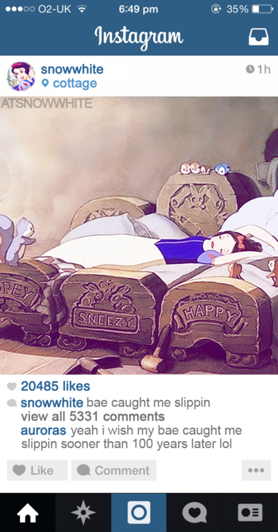

two.
You live quite a confined life in reality, forcing you to direct your romanticism towards romance novels and otome games on your phone. On the internet, however, you’re a bit of a star. You’re a popular blogger on Mirror after posting a number of selfies and cute little vlog videos

After mentioning on Mirror that singing is one of your interests, heaps of your little birds (your nickname for your followers) urge you to post a video of you singing. Choose: